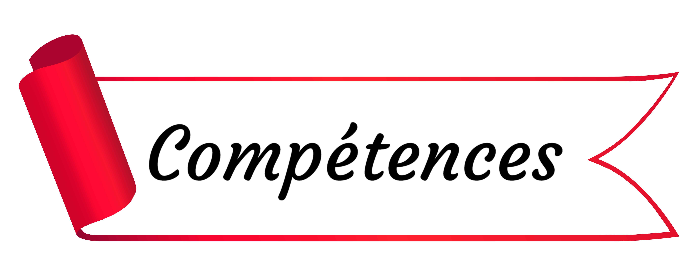

Développeur Web
Passionné d’informatique depuis l’enfance et d’un tempérament curieux et autonome, j’ai toujours aimé modifier l’apparence des sites que je fréquentais. C’est donc tout naturellement que j’ai décidé de me former dans ce métier que j’affectionne particulièrement.Fort des connaissances acquises lors d'une formation réalisée chez Openclassroom, je maîtrise aujourd’hui différents langages tel que le Html, le CSS et le Javascript, que j’ai notamment utilisé pour la création de sites à travers les projets de ma formation. Lors de cette dernière j’ai également acquis la maîtrise de certains outils tel que Visual Code Studio, Gitkraken, SASS ou encore, Bootstrap.
Aujourd’hui, j’aimerais mettre à profit mes compétences au seins d’une entreprise et bénéficier de l’opportunité d’intégrer une équipe avec laquelle je pourrais me construire professionnellement.

Langages
HTML5
CSS
Javascript
SASS
Outils
Visual Studio Code
GitHub
GitKraken
Bootstrap